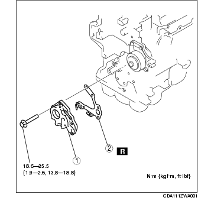

Oil pump removal/installation [ZY]
- • Hot engines and engine oil can cause severe burns. Turn off the engine and wait until it and the engine oil have cooled.
1. Disconnect the negative battery cable.
2. Remove the timing chain. (See TIMING CHAIN REMOVAL/INSTALLATION [ZY].)
3. Remove in the order indicated in the table.

|
1
|
Oil pump
(See Oil Pump Installation Note.)
|
|
2
|
Oil pump gasket
|
4. Install in the reverse order of removal.
5. Start the engine and inspect for oil leakage.
6. Inspect the oil pressure. (See OIL PRESSURE INSPECTION [ZY].)
7. Inspect the oil level. (See ENGINE OIL LEVEL INSPECTION [ZY].)
Oil Pump Installation Note
1. Install the oil pump gasket to the oil pump.

2. Install the oil pump and the oil pump gasket to the engine as a single unit.